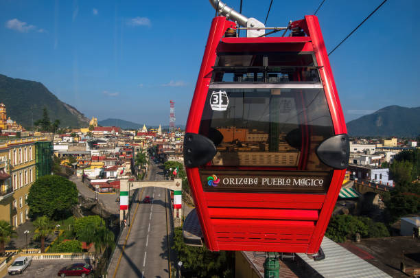

Teleférico de Orizaba
Disfruta de una vista espectacular desde las alturas.
Explora los rincones más hermosos de este Pueblo Mágico.
Disfruta de una vista espectacular desde las alturas.
Un hermoso sendero rodeado de naturaleza y puentes encantadores.
Una joya arquitectónica diseñada por Gustave Eiffel.
Sumérgete en la cultura, historia y belleza natural de Orizaba.
Explorar ahora